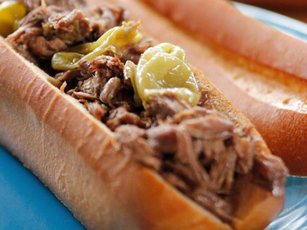

Italian Beef Sandwiches
ITALIAN BEEF SANDWICHES

Description
Pulled from the classic Better Homes Cookbook, this sandwich delivers with
tender beef and rich blend of flavors throughout. For best results, I would
not even bother trying to cook this on high for shorter periods (though the
instructions are there if you so choose), as the beef tends to still have a
toughness to it. Serves roughly 8 sandwiches, depending on size of roast
and how stuffed you like your sandwich.
Ingredients
- 2.5-3 lbs Boneless Beef Chuck Roast
- 4 tsp Garlic Pepper
- 2 tsp Garlic Powder
- 2 tsp Black Pepper
- 1 tbsp Vegetable/Canola Oil
- 14.5 oz Beef Broth
- 1 envelope Dry Italian Salad Dressing
- 1 tsp Onion salt
- 1/4 tsp Onion Powder
- 3/4 tsp Salt
- 1 tsp Dried Oregano
- 1 tsp Dried Basil
- 1 tsp Dried Parsley (or not...)
- 12-16 oz Drained Sliced Pepperoncini Peppers
- Plus additional for serving
- Hoagie Style Buns
- Shredded Mozzarella Cheese
Instructions
- Trim excessive fat along outside of beef.
- Heat oil in skillet.
- Coat beef with garlic pepper seasoning and brown all sides on heated skillet.
- Place meat in crockpot. It may be necessary to cut meat in half to fit.
- Whisk together beef broth, italian dressing mix, onion salt, oregano, basil, and parsley.
- Pour over meat in crockpot.
- Top with pepperoncini peppers.
- Cover and cook on low for 10 hours.
- Note: Can be done on high for 5-6hours, but would not recommend as the beef
does not come out nearly as tender.
- Shred in crockpot.
- Serve in hoagie buns, topped with cheese and more pepperoncini. Drizzle cooking liquid
for additional flavor and to melt cheese.